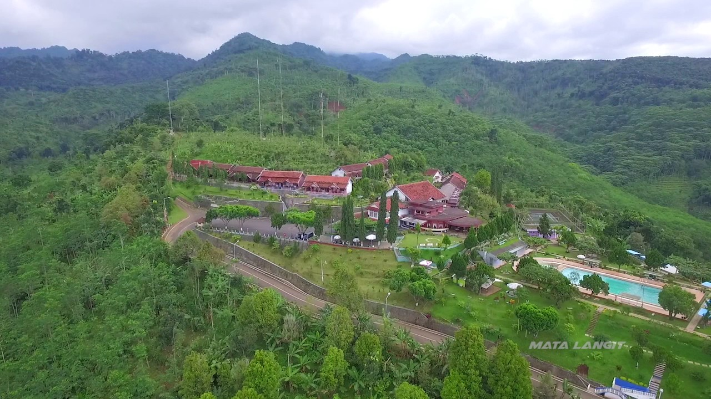

Melihat kantor desa mirip istana negara, dibangun 4 tahun dengan dana Rp 1,8 Miliar. Meski kantornya berada di sekitar area persawahan, struktur bangunan kantor desa Kemuningsari Kidul ini sangat mirip dengan istana negara.
Selengkapnya
Pantai Papuma Jember merupakan salah satu wisata pantai yang dimiliki Jawa Timur. Nama Papuma ini sebenarnya adalah singkatan dari "Pasir Putih Malikan". Dan singkatan tersebutlah yang hingga kini lebih familiar di telinga wisatawan.
Selengkapnya Puncak ini merupakan puncak asli yang ada di Jember. Anda yang hendak berkunjung ke puncak bisa berkunjung ke puncak ini. Banyak fasilitas yang dimiliki oleh puncak ini dan sangat lengkap dibandingkan yang lainnya.
Selengkapnya
Kali ini ada varian bakso yang berbeda dari yang lain. Adalah Bakso Kabut. Bakso dengan campuran telur menyelimuti kulit bakso dengan isian daging sapi, sajikan cita rasa berbeda dari bakso pada umumnya.
Selengkapnya
Suwar Suwir adalah sejenis makanan ringan yang terbuat dari bahan dasar tape. Suwar Suwir ini memiliki bentuk persegi panjang kecil dengan tampilan yang berwarna warni. Sekilas makan ini hampir mirip dodol.
Selengkapnya
Makanan ini terbuat dari tape yang sudah diinovasi oleh masyarakat jember. Prol tape ini cocok disajikan saat anda berkumpul dengan keluarga. Bahan dari Prol Tape ini antara lain; tape singkong, tepung terigu, margarine, susu, dan telur.
Selengkapnya